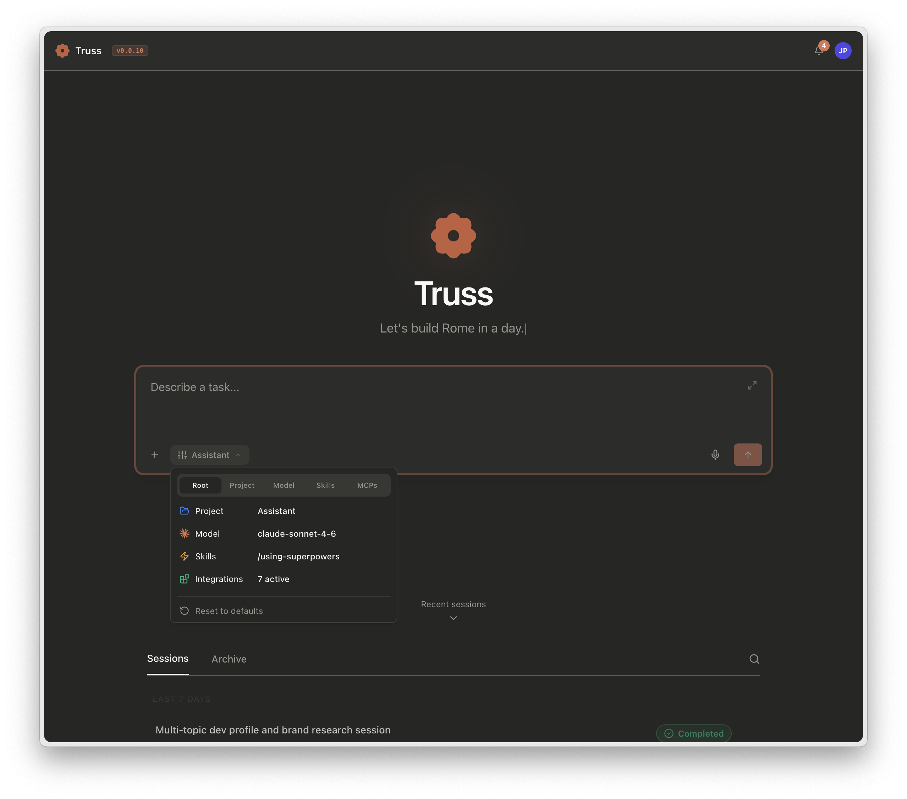
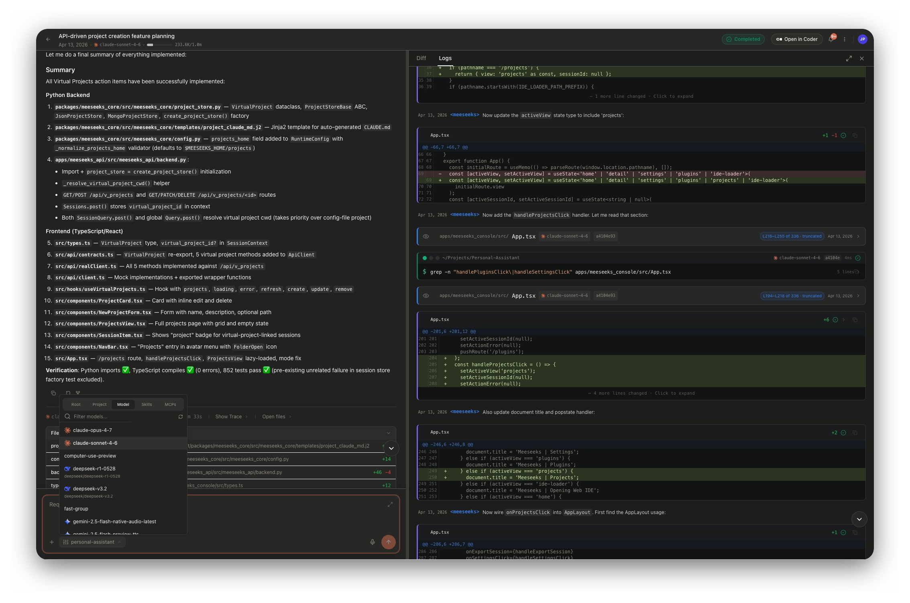
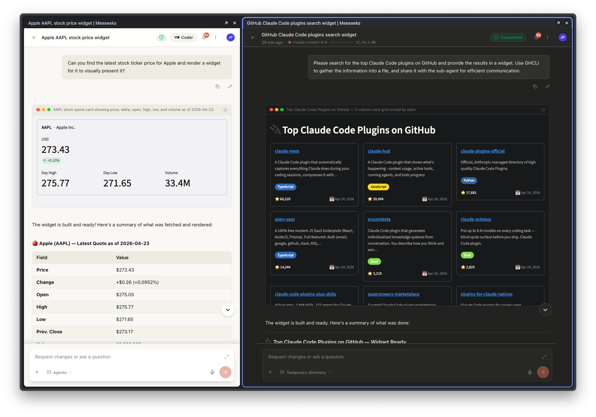

Home
bearlike / Assistant
Truss is an AI agent that plans, delegates, and completes your work.
Hand off a goal. Truss drafts a plan and spawns parallel sub-agents for the independent pieces. A live hypervisor watches every child for stalls, drift, and budget overruns. You get one synthesised answer with the full audit trail. Any model works. Your existing MCP configs, skills, plugins, and project instructions drop in unchanged.



Choose your surface
One engine. Five clients. Pick whichever matches where the work already happens inside your team. Behaviour, tools, and configs are identical across all of them; the mode of access is what changes.
How it works
You describe an outcome
Ask for it in plain English on whichever surface is closest. In plan mode, the root agent drafts the steps first and waits for your approval. Destructive work never runs before you sign off on the plan.
Truss delegates in parallel
The root agent spawns sub-agents for any pieces of work that can run at the same time. A test run, a search, a refactor, and an MCP call against an external service can all execute in parallel. A live hypervisor watches every child for stalls. It steers drifting agents back with natural-language nudges between tool steps, and enforces per-agent token budgets without killing in-flight context. The tree grows in real time and you can steer or cancel any branch.
You get a synthesised answer, not a pile of logs
Each sub-agent returns a structured result: status, summary, warnings, files touched, and acceptance-criteria checks. The root synthesises them into one coherent answer, alongside a full transcript of every tool call, every permission prompt, and every compaction. Fork any message to branch the conversation, replay a failure against a different model, or hand the whole thing off to a teammate.
Go deeper
Want the internals? See Architecture Overview for the tool-use loop, hypervisor, and structured-concurrency lifecycle.
What's new
Already using Claude Code or Codex?
Truss reads the configuration you already have. Point it at a project and it picks up your MCP servers, skills, plugins, and instruction hierarchy automatically. No rewrites, no new formats.
servers and the Claude Code / VS Code mcpServers schemas are accepted at project and user scope.
SKILL.md files in ~/.claude/skills/ or .claude/skills/ activate exactly as authored, with the Agent Skills standard.
CLAUDE.md, AGENTS.md, and .claude/rules/*.md all load hierarchically on session start.
session_tools array in plugin.json. The core imports the class and wires it to the ToolUseLoop; widgets, exit-plan-mode, and future capability bundles all use the same primitive.
See also
Project Setup and Plugins & Marketplace walk through the complete compatibility matrix.
What you can do
- Built-in tools: read, edit, shell, list
- Web IDE: per-session code-server
- Code intelligence (LSP)
- External tools (MCP)
- Widgets: interactive UI inline in chat
- Plan mode: review before execution
- Permissions and hooks
- Troubleshooting guide
From install to production
A five-step journey. Each step is short, and each link lands on the page you need.
Install
Configure